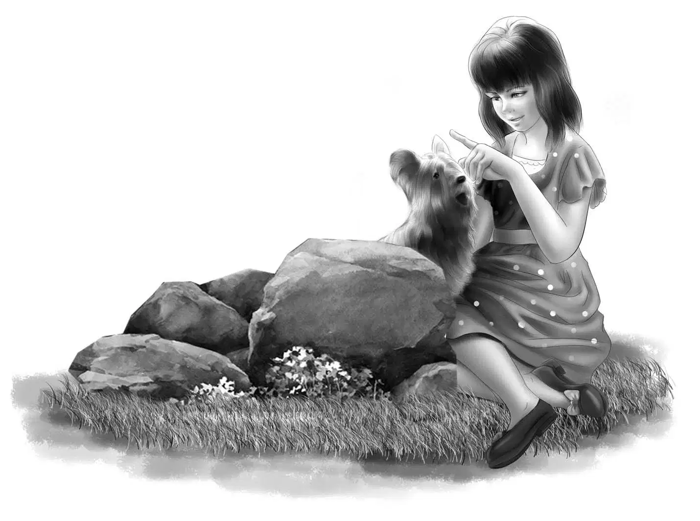
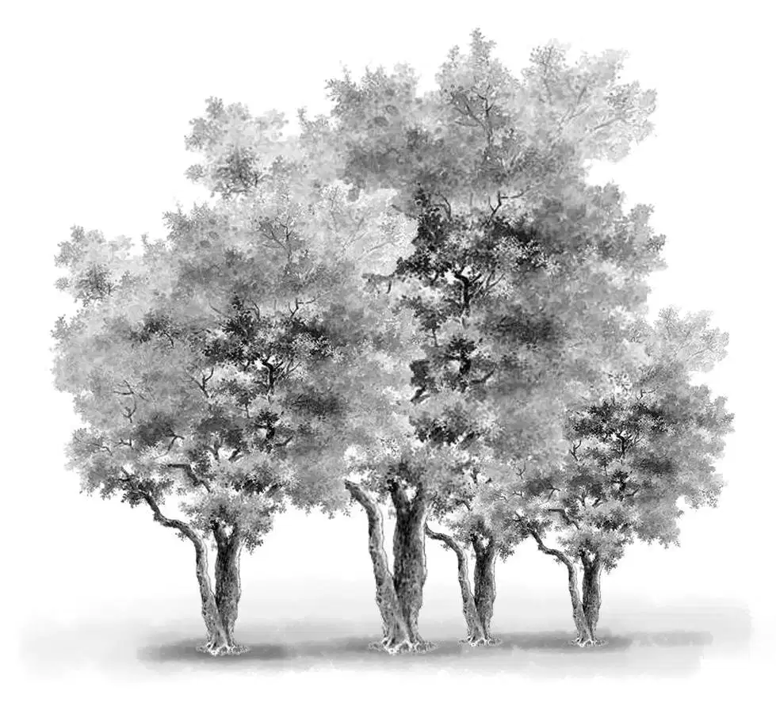
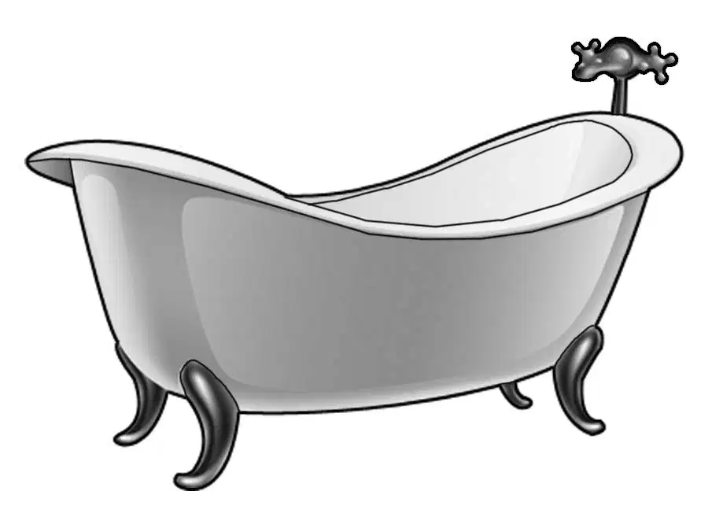
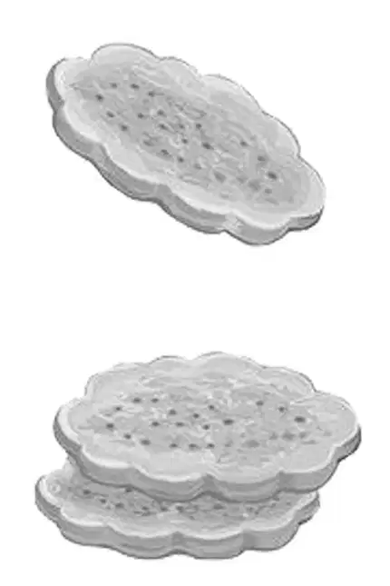
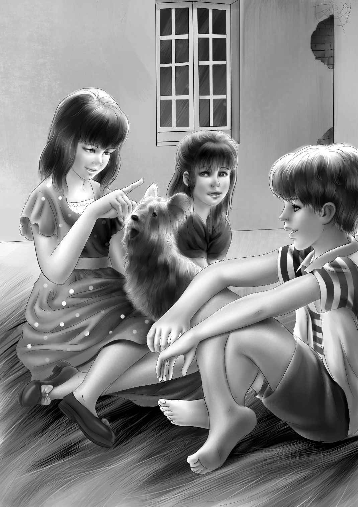
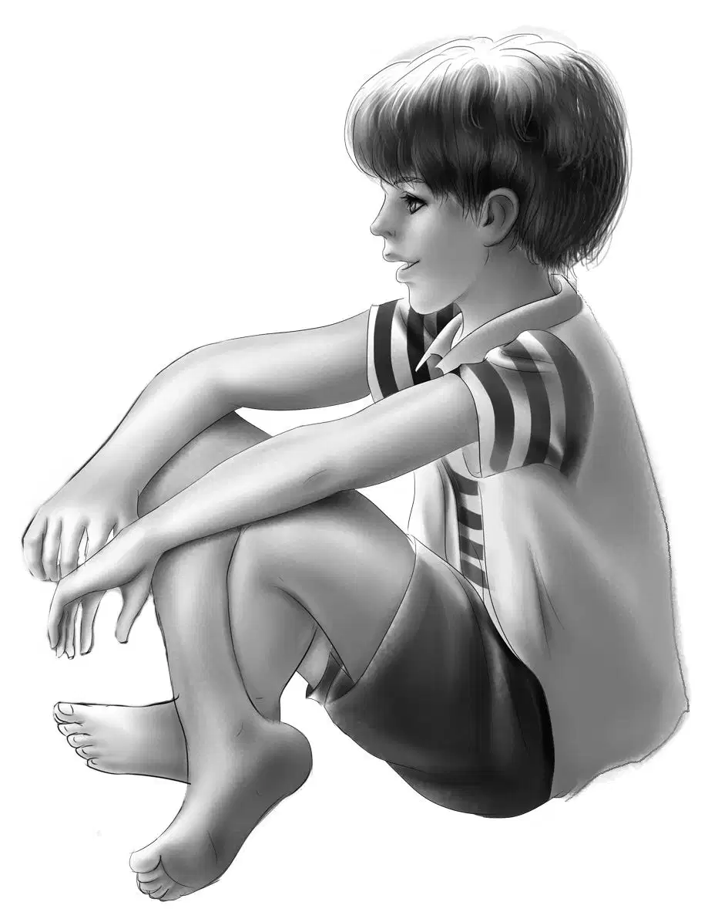

Out of the Rain

果不其然，天色转瞬间便阴沉了下来，黑压压的云层越积越厚。孩子们还没来得及找到住处，瓢泼大雨就开始倾盆而下，雨势越来越大，仿佛千万张水幕延展开来。雷声隆隆，不绝于耳。
“天哪。”杰西叫了起来，“还是找个地方避一避吧！雨这么大，怕是赶不到旅馆，咱们就要变成落汤鸡了。”

“我已经成落汤鸡啦！”班尼说，“雨衣根本不起作用。”
“咱们在附近找一找，看有没有老房子。”亨利叫道，“我的鼻子和耳朵都进水了。”
“也许可以找到个草垛。”班尼建议道，“就像当年住在棚车时那样。”
维莉向后撩了撩湿淋淋的头发：“可就算是找到了，草垛肯定也湿得透透的。”
孩子们一边奋力前行，一边关注着道路两边，终于，他们发现了一栋老房子。
老房子孤零零地伫立在远离马路的地方，四周除了稀稀拉拉的几棵树外，连个人影儿都没有。窗户全都破碎不堪，一扇门被风吹得砰砰作响。
“看！”班尼叫了起来，“这就是你要找的老房子，好歹有个屋顶可以遮雨！”
“屋顶肯定是漏的。”亨利说，“不过窗子都破成这样，有没有屋顶也没太大区别了。我先进去看看，你们待会儿再进来。”
“不行。”班尼的语气不容反驳，“我要跟你一起进去，把鬼吓跑。”
哪有什么鬼啊，大家不禁笑了起来。两个男孩推开门，朝屋里瞥了一眼，这是一间空荡荡的大屋子，里面什么也没有，甚至连地毯都没有铺。
“里面没人。”亨利高声召唤道，“你们女孩子赶快下车，把车子推进来。”随后，他和班尼一起，将各自的自行车推到屋角，开始四处打量起来。
“屋顶竟然不漏雨呢！”杰西说，“还有，离窗户比较远的地面居然一点儿都没湿。”
“就是有点潮，幸好没有积水。”班尼说，“来吧，咱们就坐在这块干地上，欣赏一下咱们的新别墅吧！”
维莉看了看这间空荡荡的屋子：“雨一停咱们就走，估计这屋子的主人不会介意的。”
“照我看，屋主根本也不在意这栋房子。”亨利说，“况且，咱们又不会把它弄坏。”
雨点仍然不断地从窗口飘进来，一滴滴汇聚在一起，朝墙角流去。
“要是雨水自己会流出去就好了。”班尼说。
“别担心，班尼。”亨利说道，“要是水积多了，咱们就到二楼去。对了，咱们到二楼去看看吧。”
大家跟在亨利身后上了楼，发现上面除了两间空屋子和一个卫生间外，什么都没有。
“这卫生间可真是糟透了。”班尼感慨道，“所有管道都是坏的。”
“看来这儿已经很久没有人住了。”亨利说。
杰西看了一眼浴盆：“这儿倒是个晾衣服的好地方。看到浴盆上面的杆子没？之前准是用来挂浴帘的。”
“没错。”亨利说，“咱们再到其他地方看看吧！”
二楼的情况跟楼下差不多，只有屋前的窗口会飘进雨水。
“这两间就是卧室了。”维莉说，“真不明白房主怎么不把屋子好好整修一下，其实这老房子还蛮不错的啊！”
“我觉着房主应该好久没来过了。”杰西说道。
“天越来越黑了。”班尼插了进来，“我肚子饿了，咱们吃点东西好不好？”
“啊哈！我就等着你这句话呢，班尼。”哥哥说道，“这里没有电，估摸着大家也不愿打着手电筒吃饭，所以趁现在还看得见，咱们赶快吃吧！”
“等一下。”杰西说，“包里都有干衣服和毛巾，咱们先擦干雨水，换上干衣服，把湿衣服挂在浴盆的杆子上晾着吧！”

“我没意见。”班尼说，“反正费不了多少工夫，我保证是第一个换完的。”
这话倒是不假，听到他蹬蹬蹬地跑下木楼梯，两个女孩都笑了起来。
杰西说：“要是大家不想摸黑的话，恐怕今晚只能早点睡觉了，而且晚饭只能吃应急口粮——我压根没想到会用得上它们，以为咱们无论如何也找得到一家旅馆哩！结果是被大雨困住，旅馆也没有踪影。”
姐妹俩下楼的时候，班尼正把应急口粮从包里拿出来。
“还记得咱们住在棚车里的日子吗？”维莉突然问道，“那时候，非得铺张餐巾纸做桌布，不让一丁点儿面包渣留在地上，否则就会引来老鼠。”
“现在要担心的可不止是老鼠了，”班尼乐呵道，“瞧，窗子破成这样，啥玩意儿都钻得进来——钻进只狗熊都不稀奇。”
“这片地儿可没有狗熊出没，”维莉平静地说道，“不过要是留下面包渣，倒是很有可能会招来老鼠。”

于是，四张餐巾纸被麻溜儿地铺在了地上，奥登兄妹也开始吃起了晚餐。
“咱们最好把明天的早餐省出来。”杰西建议道，“说不定明天还会继续下雨呢！留些牛奶和饼干出来吧。”
“说得对！”亨利很是赞同，“要是没东西吃，班尼连半步都懒得动。”
“连上床都懒得上呢。”班尼说着，打了一个哈欠。
其实，根本不必担心面包渣的问题，因为孩子们把面包吃了个精光。大雨仍在不停地下着，雨水不断从窗外飘进来。
“你们女孩子睡楼上好了。”亨利略略思索了一下，“我和班尼把睡袋铺好，就在这儿睡。大家最好穿着衣服睡觉。”
“还真让你给说中了，班尼。”杰西说，“这睡袋还真派上用场了。”
“可我原本是为野外露营准备的。”班尼说。
这一天过得好刺激，孩子们很快便进入了梦乡。雨点依然噼噼啪啪地打在屋顶上，不过孩子们睡的地方却很安全，很干爽。
第二天清晨，天刚蒙蒙亮，杰西和维莉就被楼下的动静给惊醒了——听起来像是小动物的呜咽声。
“怎么回事，亨利？”杰西朝楼下喊道。
“是这样，咱们这儿来了位客人——有只小狗想从窗外爬进来呢。”
接着，杰西和维莉听见班尼轻声笑了起来：“起码从叫声听起来是只小狗狗……噢，噢，它已经爬进来了，从窗子那里……”
小狗仍在呜咽，间或大叫几声，听起来很是不寻常。
维莉转向杰西：“咱们下楼去吧，看看是只怎样的小狗，听起来它好像不太开心。”
“这也难怪。”杰西说，“外面还在下雨，这么大的雨，换做哪只小狗都不会开心的。不过，进到屋里它就会高兴了！”
两个女孩走下楼梯。

她们打量着眼前的不速之客：这是一只烟灰色的迷你小狗，长长的毛发垂下来，盖住了它的脸，也遮住了两只乌黑发亮的大眼睛，此时，它正起劲地摇着尾巴，竭力想爬到班尼的腿上去。
“狗狗，到这儿来。”杰西唤道。小狗连忙转过身，乐颠颠地跑到杰西跟前。
“哇！”班尼不禁赞道，“好听话的小狗狗。”
“是啊！”杰西点了点头，“估计它受过训练。来，蹲下！”小狗又乖乖地蹲了下来。
“不错！不错！”亨利叫道，“来，跟紧我！”
小狗一溜烟儿地跑到亨利的左手边，抬头望着他。亨利围着屋子转悠起来，小狗则紧紧跟在他左脚后面。
“它比一些小孩子都听话呢！”维莉赞道。
亨利转过身，小狗也跟着转了过来。“蹲下！”亨利一声令下，小狗便乖乖地蹲了下来。
“待着别动！”亨利说完，走回到弟弟和妹妹的身边。小狗果然一动都没有动，只是呜咽声一直没停。
“难道是受伤了吗？”亨利说，“到这儿来吧，小家伙。”亨利仔仔细细地检查了一番，又摸了摸它的耳朵和小腿，“好像没受伤。”
杰西将小狗放到膝盖上，摸了摸它的脖子。“天哪，好柔软！”她把小狗拥进怀里，小狗舔起她的手背来，“我也觉着它没受伤。”

这当儿，杰西猛地发现：“真是奇怪，它竟然没戴项圈。”
“流浪狗哪会有项圈。”班尼说，“说不准，它待会儿就会跑掉的。”
“我看不像是流浪狗。”亨利说，“它应该有主人，主人把它训练得这么听话，一定很爱它。”
小狗歪着小脑袋，睁大一双闪闪发亮的小眼睛，仰视着亨利。
“哦，看啊！”维莉说，“它这样子好可爱！你们说，咱们能找到它的主人吗？”
亨利沉吟了一会儿：“这就只能靠小狗狗自己了。咱们一会儿骑车离开的时候，看看它是什么反应。”
“没有项圈，没有名牌，什么都没有。”班尼说，“咱们连它叫什么都不知道，看来没有半点线索了。”
“说得没错，班尼。”杰西说，“半点线索都没有。”
“这下连一点睡意都没有了。”维莉说道。
亨利大笑起来：“这句话意味着什么，我们都明白！用班尼的话说就是：咱们吃早饭吧！”